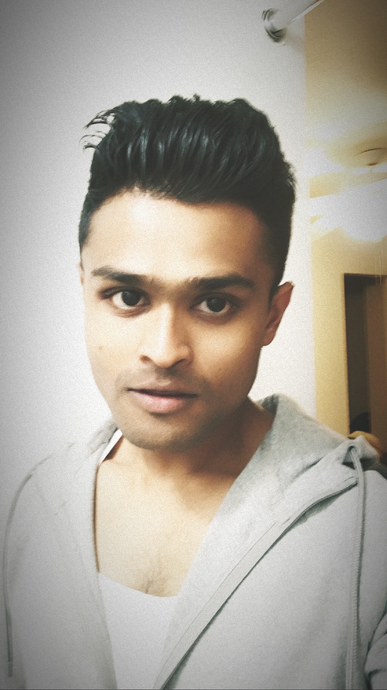

|  |
Gokulnath AmbigapathySoftware Devevloper at Ithos GLobal I am working as a Full Stack Web Developer. I love working out and yes! Starbucks for life 😁 |
| Dates | Work |
|---|---|
| Sep 2018 - Dec 2018 | Software Developer at Ithos Global |
| Aug 2015 - Dec 2018 | Research Assistant at UAlbany |
| Aug 2015 - Dec 2018 | Teaching Assistant at UAlbany |
| Jan - Dec 2016 | Adjunct Instructor at UAlbany |
| Jun - Sep 2016 | System Admin Intern at University at Albany |
| Dec 2012 - May 2014 | Senior Systems Executive at Cognizant Technology Solutions |
| Web Development | ⭐⭐⭐⭐⭐ | DataStructures and Algorithms | ⭐⭐⭐⭐⭐ |
| Teaching | ⭐⭐⭐⭐⭐ | Java | ⭐⭐⭐⭐⭐ |
| Networking | ⭐⭐⭐⭐⭐ | JavaScript | ⭐⭐⭐⭐ |
| Team Management | ⭐⭐⭐⭐⭐ | HTML/CSS/JSTL/JSPs | ⭐⭐⭐⭐ |
| Theoretical Computer Science | ⭐⭐⭐⭐ | C/C++ | ⭐⭐⭐⭐⭐ |
| JQuery | ⭐⭐⭐⭐ | Python | ⭐⭐ |
| AngularJS | ⭐⭐⭐ | RESTful APIs | ⭐⭐⭐ |
| MySQL/PostgreSQL | ⭐⭐⭐⭐ | Windows/Linux/Mac | ⭐⭐⭐⭐⭐ |
| Scrum Team Memeber Certification | ⭐⭐⭐⭐⭐ | CCNA Routing and Switching | ⭐⭐⭐⭐⭐ |
| Tech Used – JAVA, JSP, Servlet, JavaScript, JSTL, JQuery, HTML, CSS, MySQL, TomCat, TomEE, Postman Data Migration from Sql to Mql Database Migrated a few million data from Sql to Mql (Matrix Query Language) Database |
| Dynamic Import Template Created a few workflows based on the input from an excel sheet |
| Performance Enhancement Task Hashed the DB and paginated the data, thereby bringing the delay down to 5 seconds from 45 seconds |
| History Tracker for a Formula and its composition Wrote Triggers and scripts |
| Download Attributes History into an Excel Implemented the Create&Update Formula module for the WebService |
| Managed a team thereby conducted Training sessions for the entry-level developers |
|
Tech – Java, SpringBoot, HTML, CSS, JavaScript, JQuery, MySql
Blog Management System A web app built in order to manage blogs |
|
Tech – Java, HTML, CSS, JavaScript, JQuery, SpringBoot, MySql, TomEE, Postman
NBA OnTheGo A web app to display live scores. Got non-commercial student access from MySportsFeed.com in order to display real time scores, schedules and results |
| Completely Fair Scheduler (CFS) using Red Black Trees (RBT) Implemented the Process Handler part of the Kernel on our own that handled each process based on time constraint Tech – Java |
| UAlbany Food Court Website A web portal for the students and the vendors to order and supply food on campus Tech – Java, JSP, Servlet, JavaScript, JSTL, JQuery, HTML, CSS, MySql, Tomacat |
| Created a site to collect relief funds (for Chennai Floods) Tech – Java, JSP, Servlet, JavaScript, JSTL, JQuery, HTML, CSS, MySql, Tomacat |
| Object Identification using OpenCV Objects were identified in the server using Haar's Algorithm and dealt in speech in the client using Text to Speech Synthesizer Platform used was Android targeting Blind people |
I dont wanna bore you with my list of hobbies though. If you still wanna check it out then click here
My Contact InfoI haven't added all of my work here, please feel free to check out MyResume
I built my personal site using this cheat sheet
If you want a free template to create a resume of your own check this out